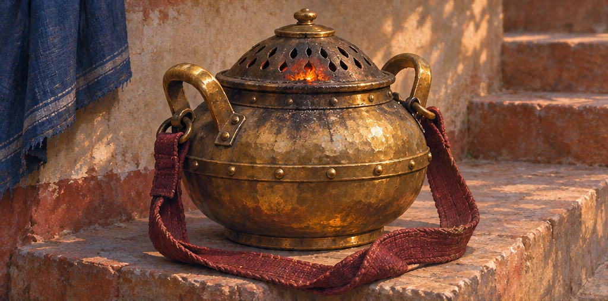

Original game score
Ash at the Waterline
One plucked drone at ignition. A low drum, a hand drum and a reed enter as the fire approaches its forty-second limit.
96 BPM · 40 seconds · Stereo
Listening desk
Full ritual mix
Arrangement
Hear a single layer
Each loop lasts sixteen beats. Compare the attacks and the space each layer leaves for a cast.
Round events
Hear the result
The result cue plays once when the round resolves. The guide voices below are synthetic timing reads for the proposed announcer.